Send your .avatar file to Animaze Avatar iOS app (on Windows, via Animaze Editor)
The .avatar file format acts like a container which can hold multiple types of avatar content, such as 3D/2D avatars, props, backgrounds.
Follow these steps to import:
-
First, make sure that the iphone and the computer are on the same local area network (same LAN/WiFi)
-
There are two ways to enable local connect:
-
Go to the Tools menu in Animaze Editor and select Local connect from the dropdown menu
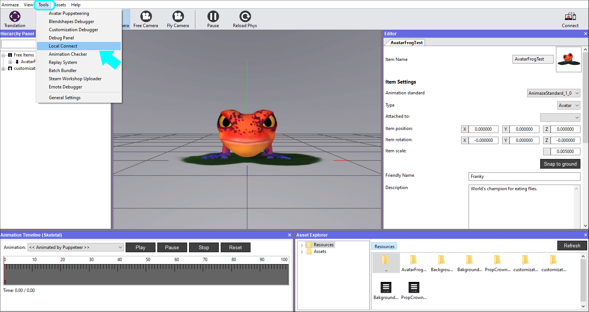
-
Click the Connect button in the upper right corner of the Animaze Editor to connect
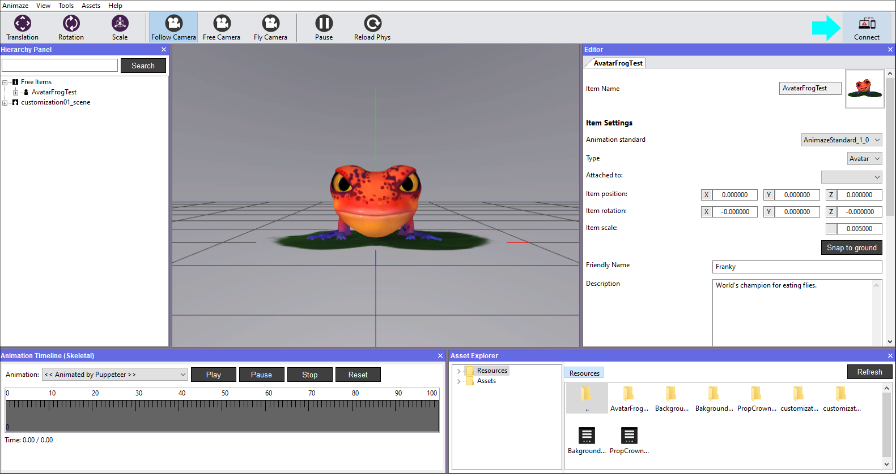
-
Animaze Connect window will appear, click on the Start button - a QR code will appear
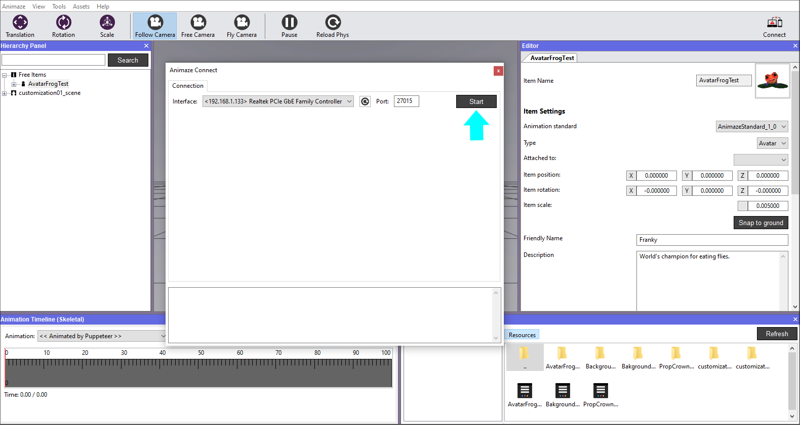
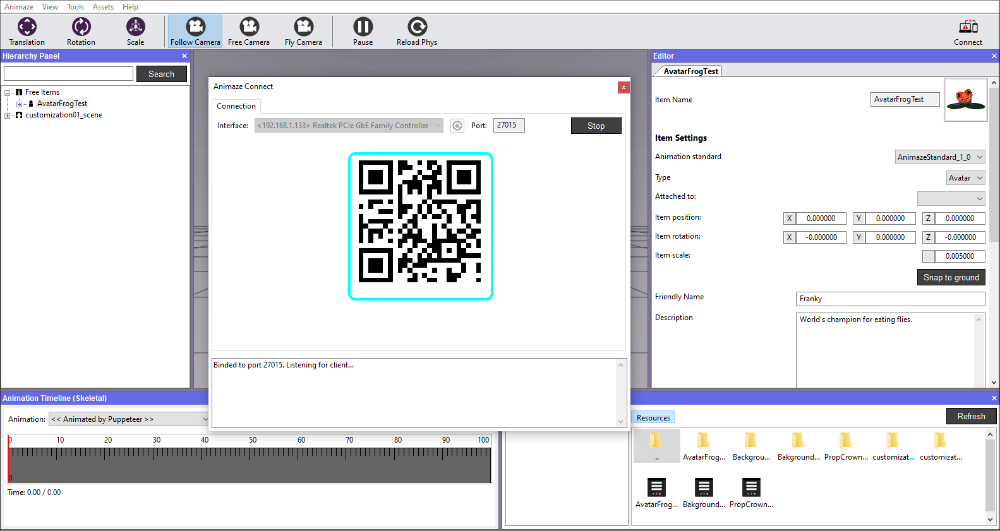
-
Now, open the Animaze application on your mobile device. Click on the Settings wheel in the upper right corner of the main screen
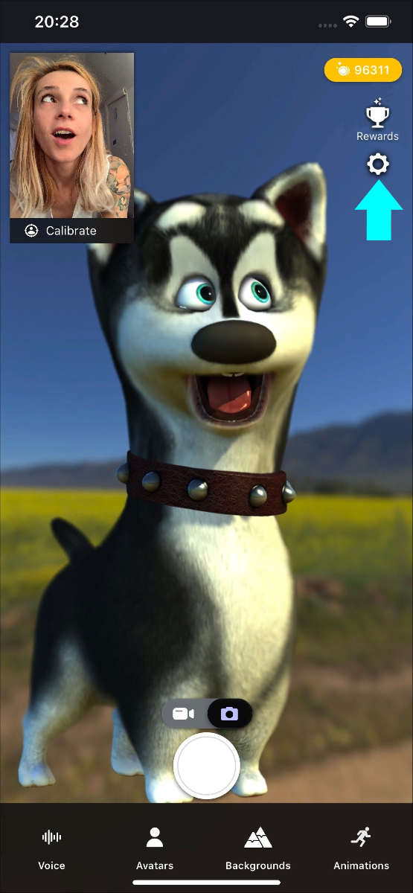
-
Scroll down to Animaze Editor and click Connect
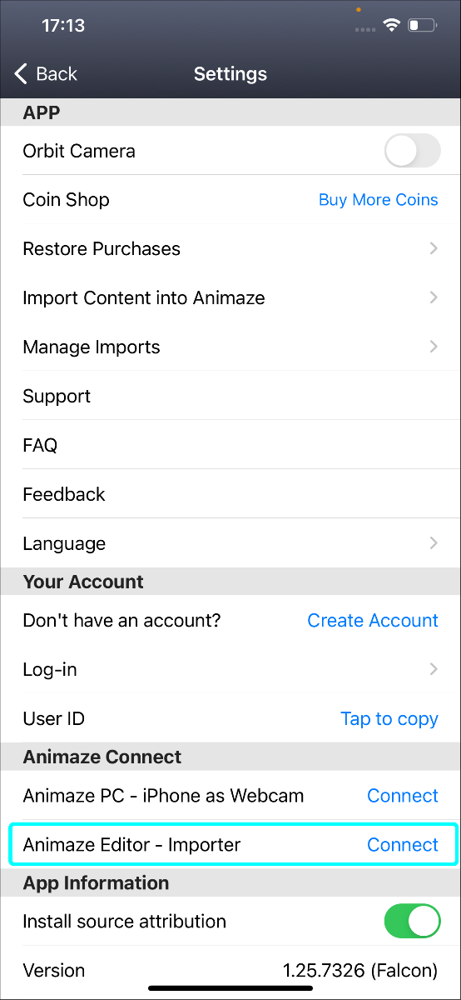
-
The rear camera is now open to point at the QR code and scan it

-
A confirmation of the connection will be received on your phone app (left image) and on the Animaze Editor (right image)
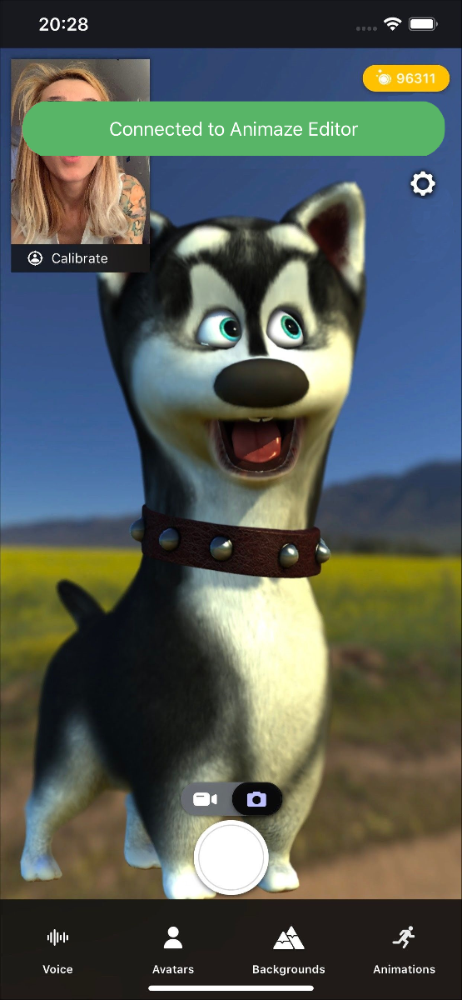
Now that you’ve connected the devices together, the next steps send the avatar to your mobile:
-
Go to the Hierarchy Panel, right click on the avatar and choose Send to device. This sends the avatar to your device, bundled in a *.avatar file format
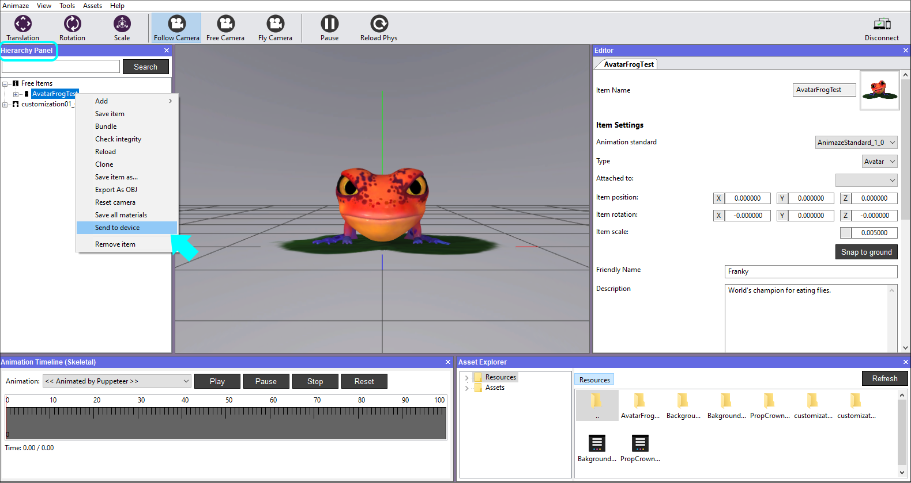
-
A pop-up will be appear on your mobile asking you to accept the file transfer
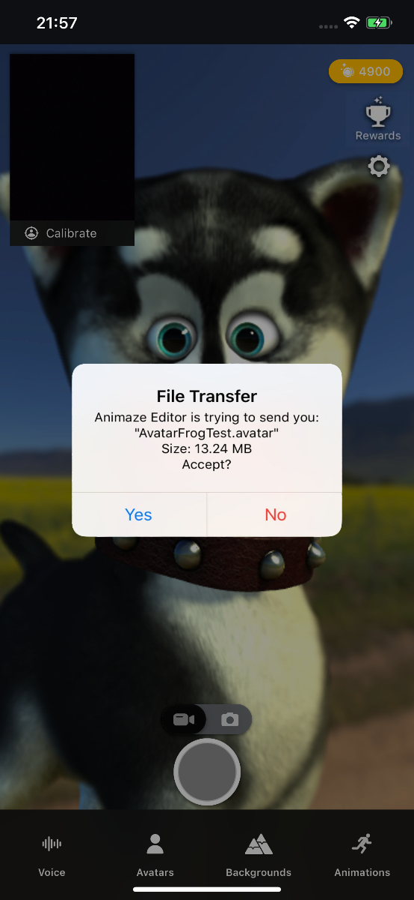
-
A confirmation message of the transfer status will be displayed on both devices after you accept
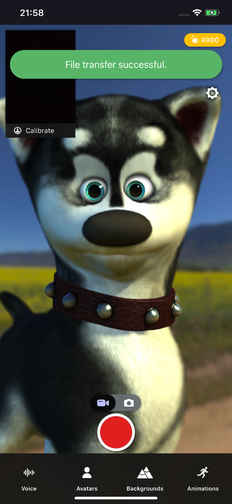
-
Open the Avatar gallery in app and find the avatar you just sent
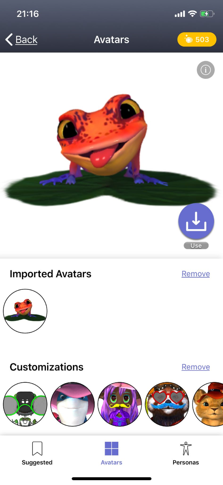
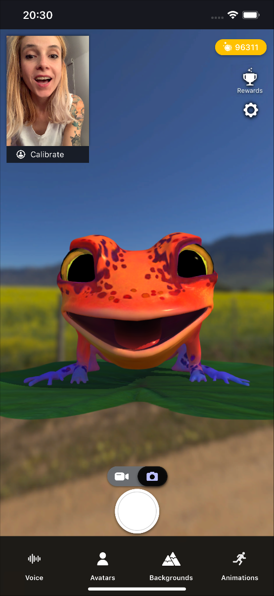